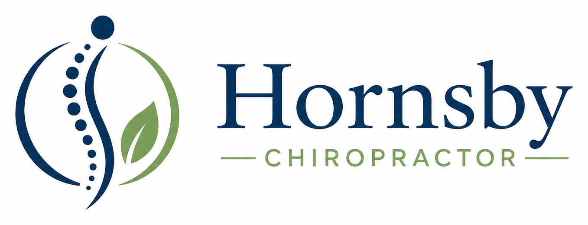
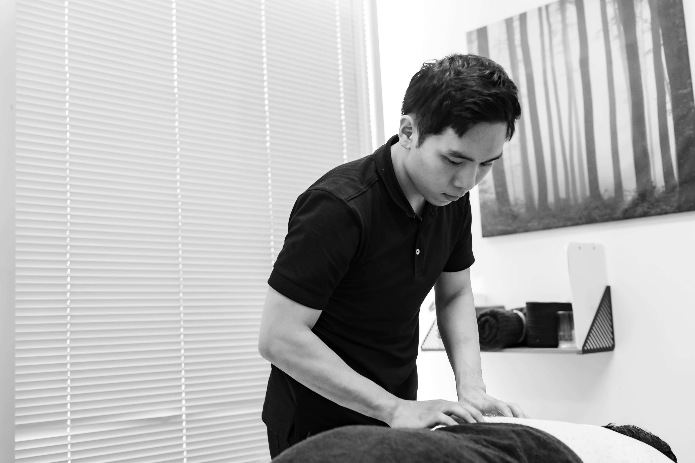

Neck pain
Treatment focused on mobility, posture correction, muscle tension, and functional recovery.

Hornsby NSW
Evidence-informed treatment for neck pain, lower back pain, headaches, posture concerns, and movement-related discomfort.
Services
Treatment focused on mobility, posture correction, muscle tension, and functional recovery.
Assessment and rehabilitation for disc injuries, stiffness, and movement-related pain.
Cervicogenic headache management and muscular tension treatment.
Long-term rehabilitation focused on posture, ergonomic advice, and movement quality.

Approach
Every care plan starts with understanding your symptoms, movement, daily routine, and goals. Treatment is practical, measured, and designed to support long-term improvement rather than quick guesses.
Care
A simple, professional clinic experience for patients seeking help with pain, movement, and everyday function.
Contact
Book online, call the clinic, or email to arrange a suitable time.
Address Suite 4, 43A Florence Street, Hornsby NSW 2077
Phone 0402 205 435
Online booking Book through Cliniko